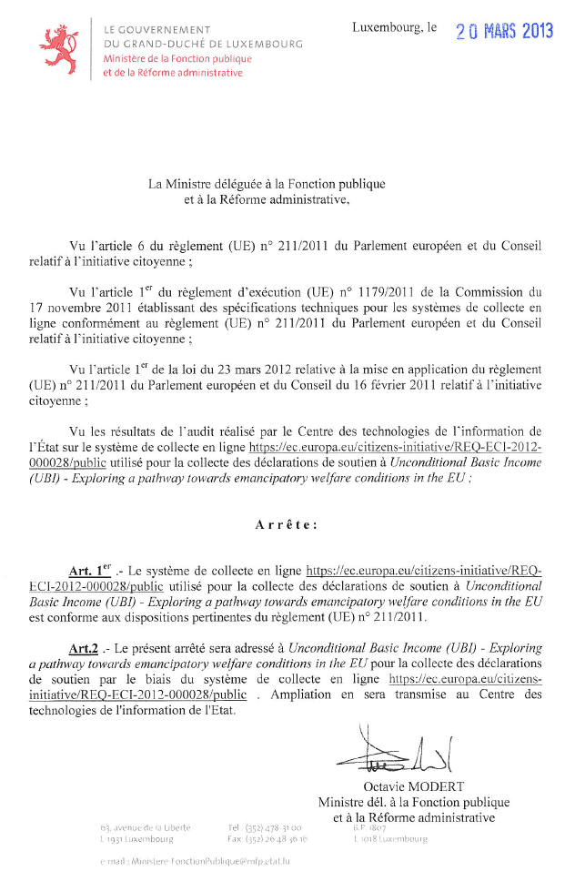

Revenu de Base : j'ai signé
J'ai fini par signer la pétition européenne en faveur du revenu de base. Sans enthousiasme parce que je suis persuadé qu'une réforme de décentralisation aussi puissante ne passera ni par des États centralisés, ni par une Europe hypercentralisée. L'espoir viendra plus probablement de Suisse ou d’une nouvelle monnaie. Mais signer ne coûte rien, c'est un pas vers la prise de conscience. Imitez-moi par millions.

Justif de signature

Certificat Revenu de Base
Suite | 2013 | Sommaire | Texte publié lundi 30 septembre 2013